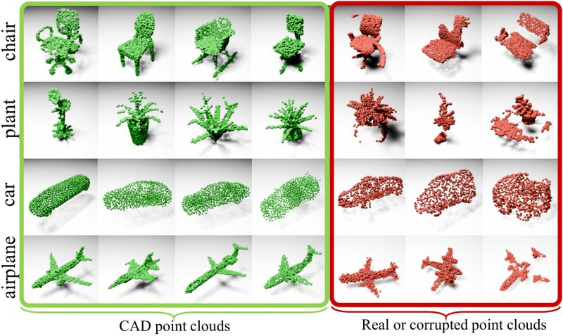
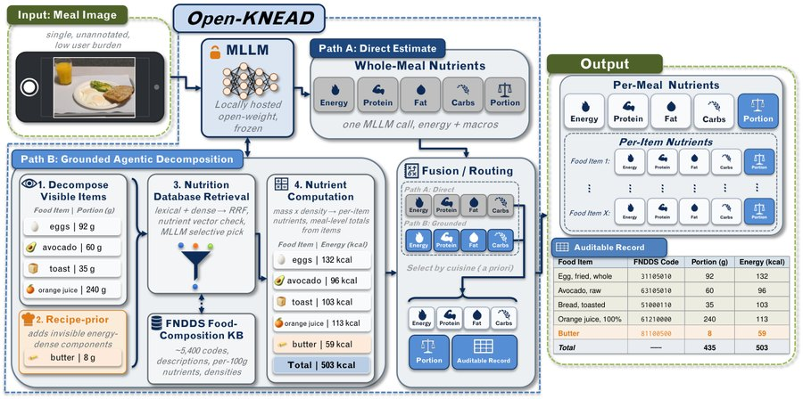
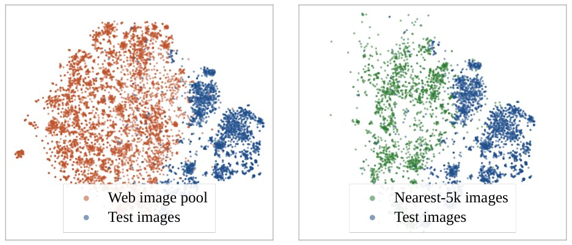
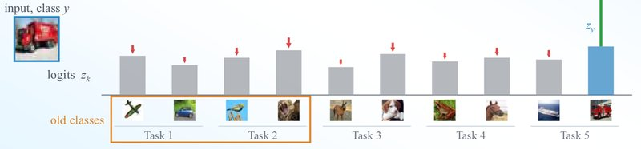
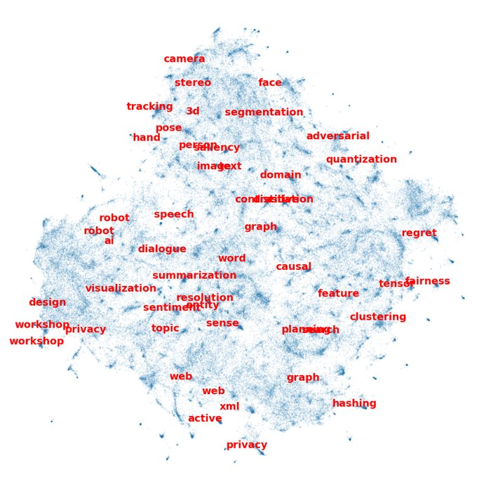
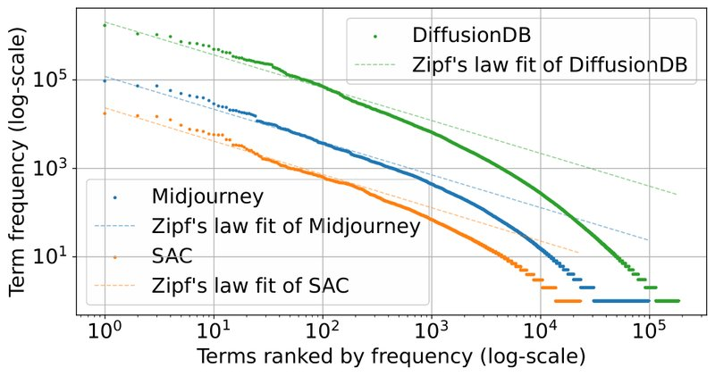
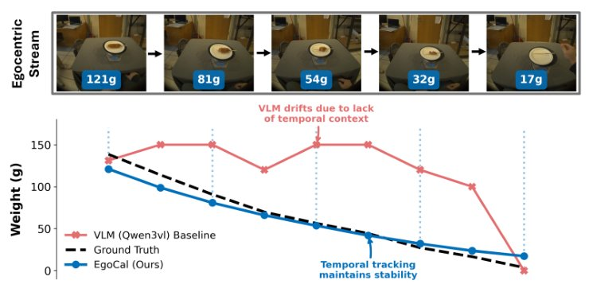
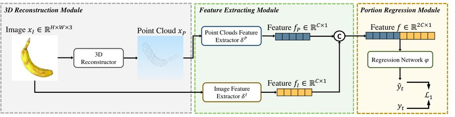
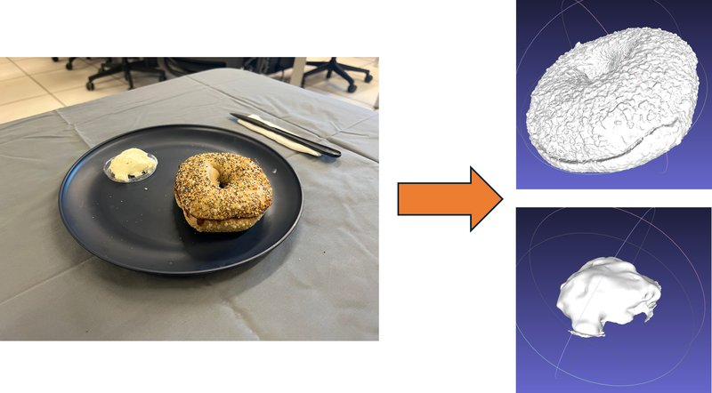
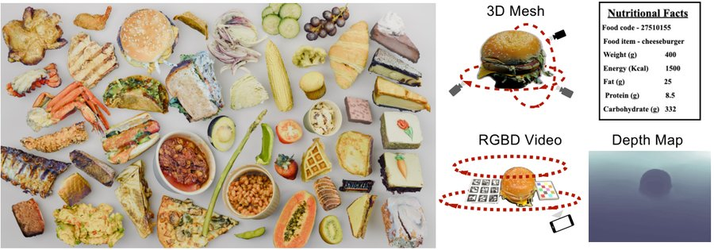

About关于我
I am a Ph.D. candidate in Electrical and Computer Engineering at Purdue University, working in the Video and Image Processing Laboratory (VIPER Lab) with Prof. Fengqing Maggie Zhu. My research builds adaptive visual systems that adjust to the characteristics of their data and the requirements of their tasks, with a focus on continual learning and multimodal vision-language models. I also work on AI-assisted dietary assessment, such as estimating food portions from images and egocentric video.
我是普渡大学电子与计算机工程专业的博士候选人，在视频与图像处理实验室（VIPER Lab）从事研究，导师是 Fengqing Maggie Zhu 教授。我的研究致力于构建能够根据数据特性和任务需求进行调整的自适应视觉系统，重点关注持续学习和多模态视觉-语言模型。我也从事 AI 辅助膳食评估方面的研究，例如基于图像和第一人称视频估计食物份量。
Before Purdue, I received my M.S. in Electrical and Computer Engineering from the University of Michigan, advised by Prof. Qiaozhu Mei, and my B.E. in Electronic and Information Engineering from the University of Chinese Academy of Sciences, advised by Prof. Qixiang Ye.
在此之前，我在密歇根大学获得电子与计算机工程硕士学位，导师是 Qiaozhu Mei 教授；在中国科学院大学获得电子信息工程学士学位，导师是 Qixiang Ye 教授。
I am looking for 3–6 month research or MLE internships starting in Spring or Summer 2027. Feel free to reach out at ma859 [at] purdue [dot] edu. 我正在寻找 2027 年春季或夏季开始、为期 3–6 个月的研究或机器学习工程（MLE）实习，欢迎通过 ma859 [at] purdue [dot] edu 联系我。
News动态
- Passed my preliminary exam and became a Ph.D. candidate. [Slides] 通过博士资格考试（prelim），成为博士候选人。[幻灯片]
- New preprint on cross-domain 3D class-incremental learning: Mitigating Performance Discrepancy in Cross-Domain 3D Class-Incremental Learning. 发布跨域 3D 类增量学习的新预印本：Mitigating Performance Discrepancy in Cross-Domain 3D Class-Incremental Learning。
- EgoCal received the Best Paper Runner-Up award at the MetaFood Workshop @ CVPR 2026. EgoCal 获得 MetaFood Workshop @ CVPR 2026 最佳论文亚军（Best Paper Runner-Up）。
- Our paper on temporal imbalance in class-incremental learning was presented at CVPR 2026. 我们关于类增量学习中正负监督时间不平衡问题的论文在 CVPR 2026 上展示。
- Presented MFP3D as an oral at the MADiMa Workshop @ ICPR 2024. 在 MADiMa Workshop @ ICPR 2024 上以口头报告形式展示 MFP3D。
- Our co-first-author paper A Prompt Log Analysis of Text-to-Image Generation Systems appeared at The Web Conference (WWW 2023). 共同第一作者论文 A Prompt Log Analysis of Text-to-Image Generation Systems 发表于 The Web Conference（WWW 2023）。
Publications论文 Google Scholar →
* denotes equal contribution.* 表示同等贡献。
Under Review审稿中
Conference Papers会议论文

Open-KNEAD: Knowledge-grounded Nutrition Estimation via Agentic Decomposition
IEEE/CVF Winter Conference on Applications of Computer Vision (WACV), 2027

Fine-Grained Food Image Understanding via Target-Aware Data Alignment
IEEE International Workshop on Multimedia Signal Processing (MMSP), 2026

Temporal Imbalance of Positive and Negative Supervision in Class-Incremental Learning
IEEE/CVF Conference on Computer Vision and Pattern Recognition (CVPR), 2026

MASSW: A New Dataset and Benchmark Tasks for AI-Assisted Scientific Workflows
Findings of the Association for Computational Linguistics: NAACL, 2025

A Prompt Log Analysis of Text-to-Image Generation Systems
Proceedings of the ACM Web Conference (WWW), 2023
Workshop PapersWorkshop 论文

EgoCal: Combining Egocentric Data with Vision-Language Fusion for Real-Time Dietary Tracking
CVPR Workshop on Multi-modal Food Computing (MetaFood), 2026 Best Paper Runner-Up
MLGenXICLR 2025 Workshop
A Data-Driven Recommendation Framework for Genomic Discovery
ICLR Workshop on Machine Learning for Genomics Explorations (MLGenX), 2025

MFP3D: Monocular Food Portion Estimation Leveraging 3D Point Clouds
International Workshop on Multimedia Assisted Dietary Management (MADiMa), in conjunction with ICPR, 2024 Oral
Preprints预印本

Implicit-Scale 3D Reconstruction for Multi-Food Volume Estimation from Monocular Images
arXiv:2602.13041, 2026

Talks报告
Adaptive Visual Systems Guided by Data Characteristics and Task Requirements
Oct 20262026 年 10 月
Ph.D. Preliminary Examination, Elmore Family School of Electrical and Computer Engineering, Purdue University博士资格考试，普渡大学 Elmore 电子与计算机工程学院
Education教育经历
Purdue University — Ph.D. in Electrical and Computer Engineering普渡大学 — 电子与计算机工程 博士
2023 – present2023 – 至今
Advisor: Prof. Fengqing Maggie Zhu · Ph.D. candidate since Oct 2026导师：Fengqing Maggie Zhu 教授 · 2026 年 10 月起为博士候选人
University of Michigan — M.S. in Electrical and Computer Engineering密歇根大学 — 电子与计算机工程 硕士
2021 – 2023
Advisor: Prof. Qiaozhu Mei导师：Qiaozhu Mei 教授
University of Chinese Academy of Sciences — B.E. in Electronic and Information Engineering中国科学院大学 — 电子信息工程 学士
2016 – 2020
Advisor: Prof. Qixiang Ye导师：Qixiang Ye 教授